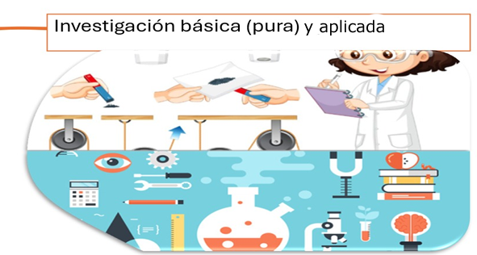
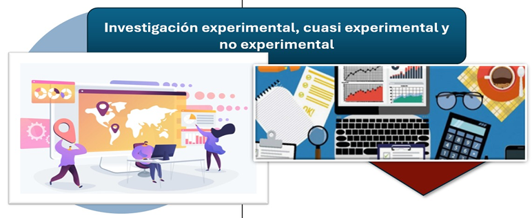
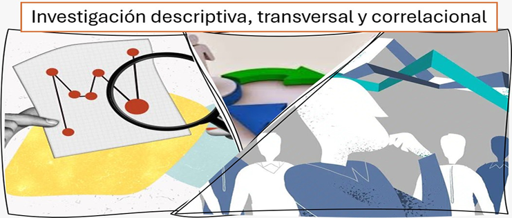
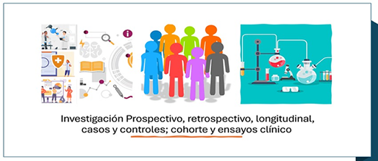

Unidad I. Metodología de la investigación científica
Se clasifica dependiendo de su enfoque, alcance, diseño y fuente de datos. Conocer estos tipos y formas permite seleccionar el método más adecuado al problema de estudio y garantizar resultados válidos y útiles, especialmente en medicina y biología.
Investigación básica/pura
La intención es crear nuevos conocimientos y profundizar en todo aquello que ayude a visualizar los fenómenos naturales sin tener en cuenta su aplicación práctica, enfocando los principios, leyes y objetos de observación.
La investigación es utilizada en diferentes lugares académicos y/o hospitales para ayudar a descubrir tratamientos en la propuesta de solución a un problema de salud.
Investigación aplicada
Se utiliza en el conocimiento científico para resolver problemas concretos, estableciendo los mecanismos en la práctica
para determinar lo encontrado para establecer los posibles problemas que lo causan y plantear una posible solución.
En las ciencias de la salud, por ejemplo, dentro de la indagación se aplican diseños de tratamientos para controlar la diabetes, la implementación de estrategias de prevención de enfermedades y la evaluación de
intervenciones clínicas, ayudando a las personas que presentan esta enfermedad (Hernández Sampieri et al., 2014).
Figura 1.11Investigación básica y aplicada

Nota. Elaboración propia basada en Hernández Sampieri et al., 2014.
1.3.1
Investigación con enfoque cualitativo, cuantitativo o mixto
Enfoque cualitativo
Es fundamental en la investigación científica medir fenómenos mediante la información obtenida y establecer los mecanismos para discernir con métodos estadísticos. Su objetivo principal es comprobar hipótesis, establecer patrones y generar resultados generalizables y reproducibles.
Diseños estructurados, instrumentos estandarizados, listas y análisis estadístico garantizan objetividad y precisión.
"Su importancia radica en que facilita la predicción de comportamientos, la evaluación de intervenciones para áreas de ciencias de la salud, donde se cuantifican riesgos, prevalencias y efectos de tratamientos."
(Hernández Sampieri et al., 2014).
Enfoque cuantitativo
Establece la delimitación de los fenómenos con la información obtenida y análisis estadístico. Su objetivo principal es que la hipótesis no sea nula estableciendo variables que generen resultados medibles.
El uso de instrumentos y muestras representativas, ayudaran a la medición estadística de los valores obtenidos.
"Su importancia radica en que permite evaluar intervenciones, predecir comportamientos y tomar decisiones basadas en evidencia."
(Hernández Sampieri et al., 2014).
Enfoque mixto
Conforma con datos medibles ya sean numericos o palabras para obtener resultados en donde su objetivo es combinar la información obtenida e interpretarla para explicar no solo cuánto ocurre un fenómeno, sino también por qué y cómo sucede. Se caracteriza
por la triangulación de datos, el uso complementario de técnicas estadísticas y análisis interpretativo, así como por diseños secuenciales o simultáneos en la recolección de información.
"Su importancia radica en que fortalece la veracidad de resultados, además analiza problemas que son difíciles de resolver y ofrece una visión integral."
(Hernández Sampieri et al., 2014)
1.3.2
Investigación experimental, cuasi experimental y no experimental
Investigación experimental
Estudio que utiliza variables dependientes que sirven para la observación estableciendo causa-efecto dentro del diseño estructurado
que incluye grupos experimentales y de control, mediciones sistemáticas y procedimientos replicables.
Se lleva a cabo en entornos controlados, laboratorios o escenarios cuidadosamente diseñados, lo que permite reducir errores y garantizar la viabilidad de los resultados.
Por lo que su organización puede dar bagaje seguro y verificable, esto permite tener los elementos para ofrecer una opinión basada en elementos científicos
En el campo de la salud, por ejemplo, permite evaluar la eficacia de tratamientos, medicamentos o intervenciones preventivas; en educación, facilita
la comprobación de estrategias pedagógicas; y en tecnología, valida innovaciones antes de su aplicación. Gracias a su rigor metodológico, este enfoque contribuye a la construcción de
teorías científicas sólidas y al desarrollo de soluciones efectivas para problemas reales (Hernández Sampieri et al., 2014).
Investigación cuasi experimental
Estudio orientado a examinar relaciones de causa y efecto cuando no se puede establecer datos aleatorios en los objetos de estudio. A diferencia del experimento puro, los grupos ya existen o se forman por criterios prácticos, lo que reduce el control absoluto de las variables externas. No obstante, el investigador
introduce una intervención o variable independiente y observa sus efectos en una variable dependiente, empleando comparaciones entre grupos semejantes o mediciones antes y después de la intervención.
Este enfoque es relevante porque permite observar el objeto de estudio y establecer valores que permita llevar a cabo un control experimental estricto, pero es importante establecer que no es ético practicarlos.
Se utiliza con frecuencia en la sociedad para valorar programas, estrategias o intervenciones para ofrecer un menor control que el diseño experimental, aporta evidencia útil para mejorar prácticas y orientar decisiones, especialmente cuando se apoya en procedimientos estadísticos que ayudan a disminuir
posibles sesgos (Hernández Sampieri et al., 2014).
Investigación no experimental
Estudio orientado a examinar vínculo de causa y efecto cuando no se establece aleatoriamente al objeto de estudio. Una característica entre los experimentos es
cada uno contiene sus bases y sus propias particularidades, por lo que cada variable presenta sus propios efectos y posteriormente podemos realizar comparaciones.
Derivado de esto se puede observar cómo es importante tener un control de cada experimento considerando siempre los valores éticos y su contexto.
Ahora bien, existen programas que ayudan a tener mejor control para mejorar las prácticas que se realizan y que se pueden tener programas computacionales para los procesos estadísticos.
Figura 1.12Investigación experimental, cuasi experimental y no experimental

Nota. Elaboración propia basada en Hernández Sampieri et al., 2014.
1.3.3
Investigación descriptiva, transversal y correlacional
Investigación descriptiva
Se distingue por la forma que busca, observa y mide los fenómenos que suceden en una población, sumando a ello sus características y propiedades.
Hay que considerar que las preguntas a las que se orienta son: qué, cómo, cuándo y dónde, esto permite que tengamos las bases de lo que se desea investigar u observar.
Derivado de lo anterior es de suma importancia establecer que es parte elemental del diseño de la investigación ya que como se estableció con anterioridad
las preguntas son base principal de esta, ahora bien, puede contar con elementos como la investigación cuantitativa, variables controladas, estudios transversales
y bases para tener los elementos de la investigación sólidos.
Investigación transversal
Es un diseño de estudio que consiste en recolectar información en tiempo real o con la intención de determinar aquellos factores que se involucran en una muestra determinada.
Este tipo de investigación permite observar cómo se presenta un fenómeno en un punto específico del tiempo, sin realizar seguimiento posterior. Se utiliza frecuentemente mediante encuestas, cuestionarios o registros existentes para identificar características, prevalencias o
asociaciones entre variables.
Se utiliza para identificar enfermedades o riesgo en la salud; en educación,
permite conocer el rendimiento académico en un periodo específico; y en ciencias sociales, ayuda a analizar condiciones y comportamientos en un momento determinado (Hernández-Sampieri, R., & Mendoza, C. P. 2018).
Investigación correlacional
Estudia el comportamiento de diferentes factores directamente, ya que estas variables cambian de manera conjunta y en qué dirección lo hacen (positiva, negativa o nula), utilizando técnicas estadísticas como el
coeficiente de correlación. Su propósito es identificar patrones significativos dentro de un fenómeno.
Su importancia radica en que permite comprender cómo se vinculan diferentes factores en contextos reales, aportando información valiosa, por ejemplo, puede analizar la relación entre hábitos de vida y enfermedades; en educación, entre estrategias de estudio
y rendimiento académico; y en ciencias sociales, entre variables socioeconómicas y calidad de vida. Aunque no demuestra causalidad, la investigación correlacional contribuye a generar hipótesis y orientar estudios experimentales posteriores (Hernández Sampieri et al., 2014).
Figura 1.13Investigación descriptiva, transversal y correlacional

Nota. Elaboración propia basada en Hernández Sampieri et al., 2014.
1.3.4
Investigación prospectiva, retrospectiva, longitudinal, casos y controles; cohorte y ensayos clínicos
Investigación prospectiva
Parte de un diseño de estudio que se caracteriza por seguir a los participantes a lo largo del tiempo que determina eventos o factores
previamente identificados. la recolecta de información establece un punto inicial, permitiendo evaluar cómo evolucionan las variables y
cuál es su posible relación con los resultados observados. Los estudios de cohortes observan a las personas para analizar sus efectos con el tiempo.
Permite establecer secuencias temporales claras entre factores de riesgo y resultados, lo que fortalece la comprensión de procesos causales y la predicción de eventos. Para estudiar la
evolución de enfermedades o el impacto de factores de riesgo; en educación, para analizar el desarrollo del aprendizaje a lo largo del tiempo; y en ciencias sociales, para evaluar cambios en comportamientos o
condiciones de vida. Gracias a su enfoque longitudinal, la investigación prospectiva proporciona evidencia valiosa para la prevención y la planificación (Hernández-Sampieri, R., & Mendoza, C. P. 2018).
Investigación retrospectiva
Es el estudio que analiza hechos o eventos que ya ocurrieron, utilizando registros previos, historiales clínicos, bases de datos o recuerdos de los participantes para establecer las variables que se encuentran
En este enfoque, es importante observar el resultado o evento de interés y examina información pasada para determinar factores asociados o exposiciones previas. Es común en los objetos de estudio establecer los datos de los pacientes
para determinar su organización y listas para su comparación de estos.
Además de estudiar fenómenos de manera eficiente cuando los eventos ya han ocurrido, reduciendo tiempo y costos en comparación con estudios prospectivos. En la educación ayuda a analizar
el desempeño, así como en ciencias sociales, para comprender patrones históricos de comportamiento. Aunque depende de la calidad de los registros disponibles y puede presentar sesgos de memoria o información incompleta, la investigación retrospectiva aporta evidencia
valiosa para la comprensión de problemas y la generación de hipótesis (Hernández-Sampieri, R., & Mendoza, C. P. 2018).
Investigación longitudinal
Observa las relación con diferentes factores directamente para establecer su forma de cambiar de manera conjunta y en qué dirección lo hacen (positiva, negativa o nula), utilizando técnicas estadísticas como el
coeficiente de correlación. Su propósito no es establecer relaciones de causa y efecto, sino identificar patrones significativos dentro de un fenómeno.
Su importancia radica en que permite comprender cómo se vinculan diferentes factores en contextos reales, aportando información valiosa para la predicción, por ejemplo, puede analizar la relación entre hábitos de vida y enfermedades; en educación, entre estrategias de estudio
y rendimiento académico; y en ciencias sociales, entre variables socioeconómicas y calidad de vida. Aunque no demuestra causalidad, la investigación correlacional contribuye a generar hipótesis y orientar estudios experimentales posteriores (Hernández Sampieri et al., 2014).
Investigación de casos y controles
Compara dos grupos de individuos: uno conformado por personas con una enfermedad y otras saludables. A partir de esta comparación, se observa e identifica las
asociaciones que puedan explicar la presencia del evento de interés. Este diseño es especialmente útil cuando se estudian enfermedades poco frecuentes o con largos periodos de desarrollo.
Por lo que identificar los factores asociados a una enfermedad de manera eficiente, con menor costo y en menos tiempo que los estudios longitudinales. Se utiliza para
padecimientos como cáncer, enfermedades cardiovasculares o infecciones emergentes. Aunque no establece causalidad directa y puede verse afectado por sesgos de selección o memoria, la investigación de casos y controles proporciona evidencia valiosa para la prevención,
la vigilancia epidemiológica y el diseño de estrategias de salud pública (Hernández Sampieri et al., 2014).
Investigación cohorte y ensayos clínicos
Es un diseño observacional longitudinal que consiste en seguir a personas en un tiempo observando la aparición de enfermedades en función de su exposición a determinados factores. Los participantes se clasifican según estén presentando síntomas
al riesgo y posteriormente se visualiza el resultado de interés. Es de suma importancia establecer el momento de la presencia y el proceso para que con ello de establezca la epidemia y no se desarrolle más la enfermedad.
El estudio experimental está generados para determinar la eficacia de una posible intervención que prevenga con vacunas, terapias o tratamientos.
Su importancia radica en que constituyen el método más confiable para determinar relaciones causales y sustentar decisiones clínicas (Hernández Sampieri et al., 2014).
Figura 1.14Investigación Prospectivo, retrospectivo, longitudinal, casos y controles; cohorte y ensayos clínicos

Nota. Elaboración propia basada en Hernández Sampieri et al., 2014.